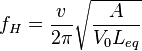
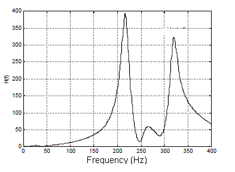
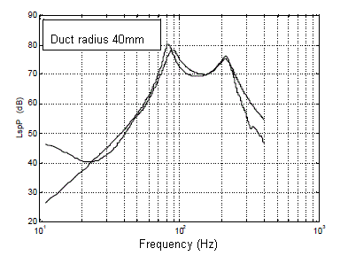
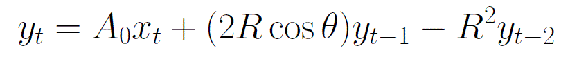
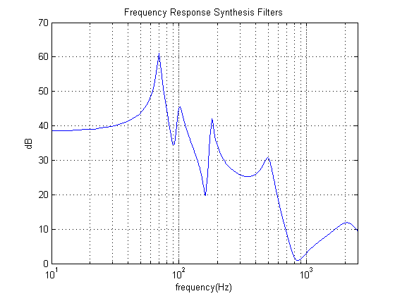

Drum Cajon Analysis and Sound Synthesis
alexnieva.GitHub.io
Introduction.
The cajon drum is a percussion instrument that was originated as a substitute to the African drums by the afro-peruvian community that were brought as slaves during the colonialism. This instrument also exists in Cuba and it is made of wood. Its shape is of a rectangle of about 480mm height, 300mm width, and 300mm depth. The front face and the back face are usually different. The front face is made of thinner wood - usually plywood - and the back face has a hole that acts as a sound projector.

It is also used in flamenco music and jazz with some variations such as snares on the back of the front plate or other metallic objects. Sounds are generated by hand-strumming the front face in different locations with different parts of the hand.
Motivation and Objectives.
The main objective of this project is to synthesize the sounds generated by the cajon drum. Being an essential instrument in many rythms of the peruvian musical culture and also used in many other types of music. It's important to understand its physical behaviour and subtleties in regard to the different materials and designs.
Sound Synthesis Approach.
Based on the geometry of the cajon drum, the problem can be tackled from different methods. We can work with a lumped parameters model based on the acousto-mechanic propierties of the system [1]. This will allow us to generate an equivalent electrical circuit that can be discretized and solved in the digital domain using the Laplace transform and its mapping into the Z plane. Another approach would be to use a Digital Waveguide mesh in 2 and 3 dimensions defining a 2D mesh for the front plate, and a 3D mesh for the volume of air inside the drum [2,3]. In addition, we have to consider the boundary conditions depending on the stiffness and materials of the drum.
The technique chosen as a first atempt to synthesize the cajon drum sounds is based on modal analysis and coupled mode synthesis [4,5]. The geometry of the drum is basically that of a helmholtz resonator with a vibrating plate as the excitation of the system. The resonant frequency of a helmholtz resonator is given by the expression:

where v is the speed of sound, A is the area of the duct, Vo is the volume of the box and Leq is the equivalent length of the duct.
Also the frequency response measured in [1] for the transfer function is:

And the sound pressure level at the hole in the back plate is:

This information suggests that we can attempt to synthesize the sounds from the exponentially decaying sinusoids originated by the vibrating modes from the instrument. These can be modeled as a second order digital filter of the form:

In our case we are going to make use of three second order digital filters to match the vibrating modes of the plate and the resonant mode of the Helmholtz resonator. The values of the complex poles depend on the bandwidth B and resonant frequency of each of them. For the cajon drum, depending on its size and hole diameter, the first resonance frequency is around 90Hz. Also the first resonant mode of the front face is around 200 Hz depending on the size. These two modes are the most important in the generation of the most characteristic sound of the cajon drum which is when it is strummed in the center of the front plate.
The simulation was implemented in Matlab (code in the repository of this project) and the following audio files were generated:

Synthesized sound with 1 resonance wav
Synthesized sound with 3 resonances wav
Real sounds of the drum cajon can be listened here:
Cajon drum sound with snares wav
In order to obtain an excitation signal for our resonant filters, we made measurements of the damped (filled with absorptive material) drum .
Discussion
The attempt to recreate the sounds generated by the drum sound was in part successful due to the simple geometry of the instrument. Nevertheless, there is still room to improve this sound synthesis engine and this study. There were difficulties such as obtaining accurate values for the poles of the digital filters. This was done based on the graphs presented in the references, but it is necessary perform measurements for each instrument to obtain the corresponding parameters because the change of size, shape, type of wood of the drum changes the resonance frequencies to an extent that makes the current model not accurate.
The matching of the resonant filters was done manually aproximating their bandwidths and calculating the resonant frequency of the cajon drum used in this project.
References
[1] Llimpe, C., Moreno, J. "Estudio Preliminar Teorico-Experimental de las Caracteristicas Acusticas del Cajon Peruano". Presented in TecniAcustica 2000, II Congreso Iberoamericano de Acústica, Madrid, Spain. October 2000.
[2] Van Duyne, S.; and J. Smith. “Physical Modeling with the 2-D Digital Waveguide Mesh,” Proc. ICMC, Tokyo. 1993.
[3] M. Karjalainen, V. Ikonen, A. Järvinen, P. Maijala, L. Savioja, A. Suutala, J. Backman, S. Pohjolainen: "Comparison of Numerical Simulation Models and Measured Low-Frequency Behavior of a Loudspeaker". In the 104th Audio Engineering Society (AES) Convention, preprint no. 4722 Amsterdam, the Netherlands. 1998.
[4] P. R. Cook. "Physically informed sonic modeling (phism): Synthesis of percussive sounds". Computer Music Journal, 21 (3): 38-49, 1997.
[5] Scott A. Van Duyne, "Coupled Mode Synthesis". Center for Computer Research in Music and Acoustics, Stanford University. Paper download